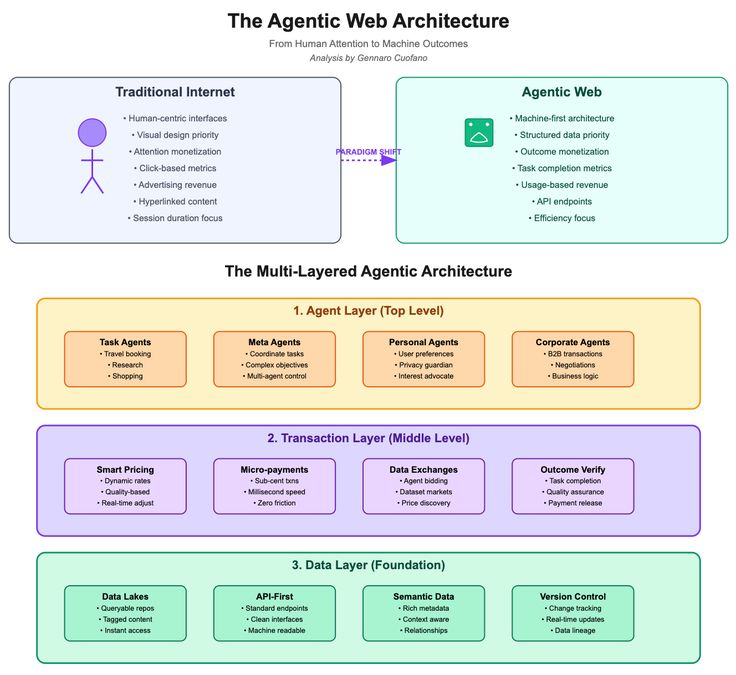

Multitier architecture is a software design pattern that separates applications into layers, such as presentation, logic, and data, to improve scalability and maintainability. Multitier architecture works by splitting applications into layers, usually presentation, logic, and data. Each tier handles a specific role, making systems easier to manage and scale. For example, the user interface runs separately from the database, so developers can update one without breaking the other.
